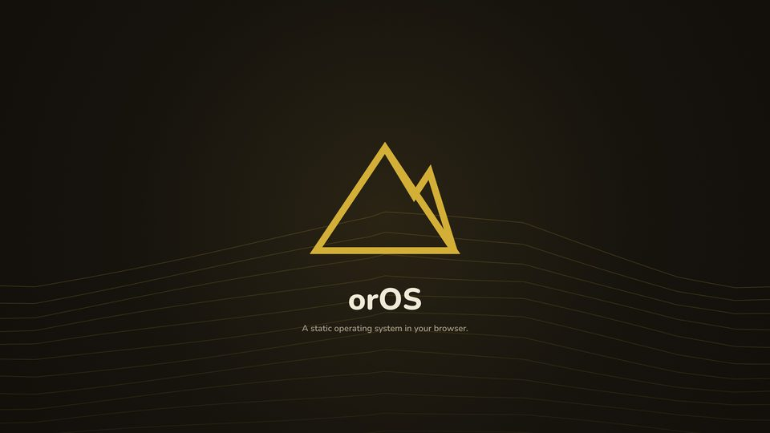
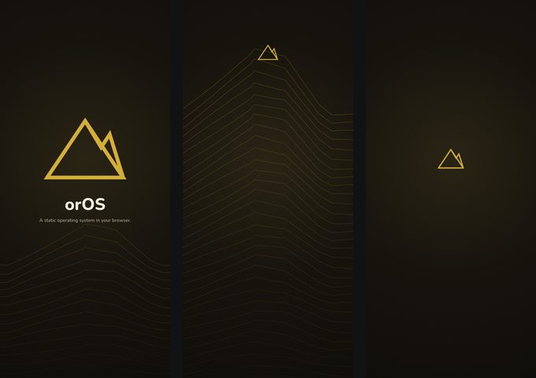

Wallpapers for desktop, phone and tablet, logos and icons, banners for social profiles, print files for t-shirts, mugs and stickers, colour palettes, fonts, brand guidelines and press releases in English and Greek. Everything is free to download.
orOS


The orOS media kit: wallpapers, logos, banners, print files, palette, fonts (Nunito with a Greek companion), guidelines and press release.
orOS-Media-Kit.zip · about 19 MB
24 wallpapers in three styles: 4K, 5K, 16:10, ultrawide, Android, iPhone and tablet. Wallpapers only (about 14 MB).
orOS, NULL JSFX and Noxpress together


The kits of all three projects, plus the wallpapers, logos, banners and print files that show them together.
NULL-JSFX-orOS-noxpress-Media-Kit.zip · about 63 MB
24 wallpapers of the three projects together, in the same sizes. Wallpapers only (about 10 MB).
Using the kit
Use anything in it to present, review or write about the projects, on screen or in print, and to show your support (wallpapers, stickers, a t-shirt for yourself). Please don’t change the marks, their colours or their proportions, and don’t sell the kit or products made from it. The fonts are under the SIL Open Font License; LICENSE-media-kit.md in each zip has the details.
The kits of NULL JSFX and Noxpress on their own are on their sites.
For press and interviews: koulaxizis@glarolykoi.net
Free forever, MIT licence. Support orOS on Ko-fi. Get orOS · Privacy policy · Source code